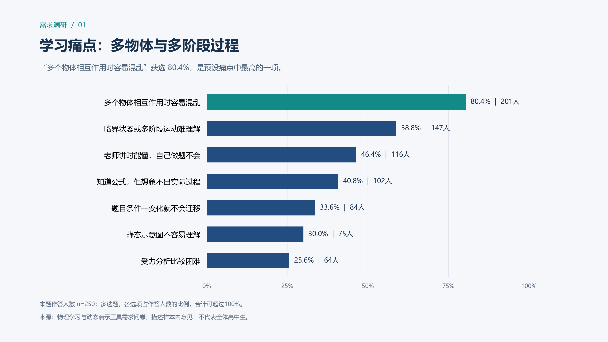
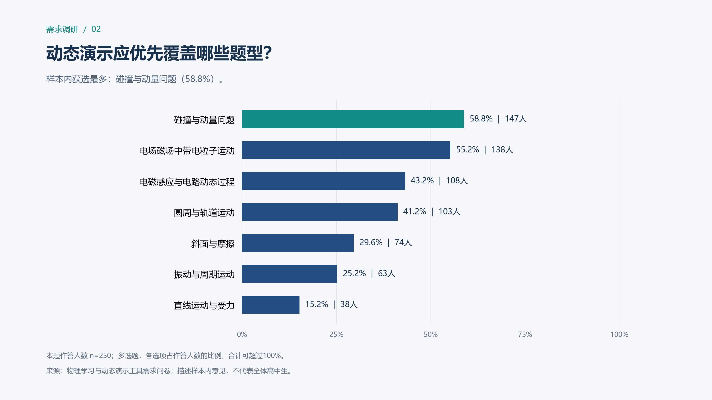
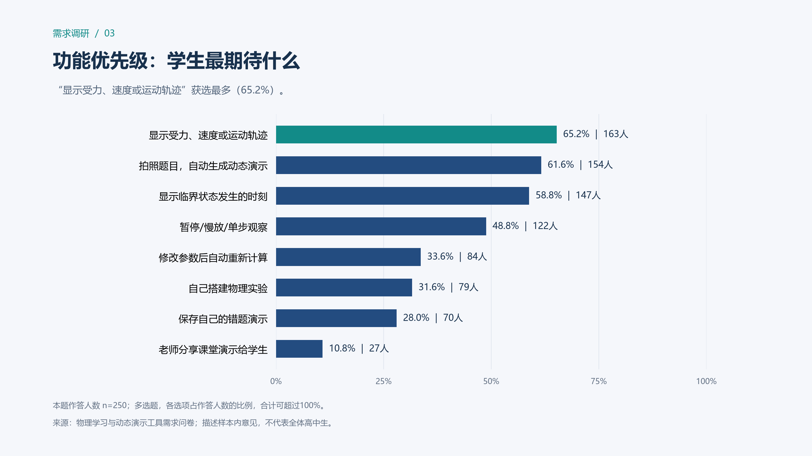
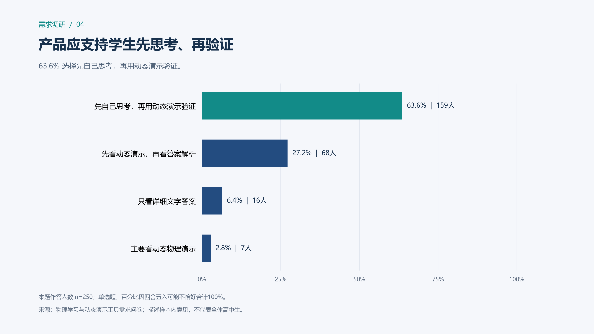
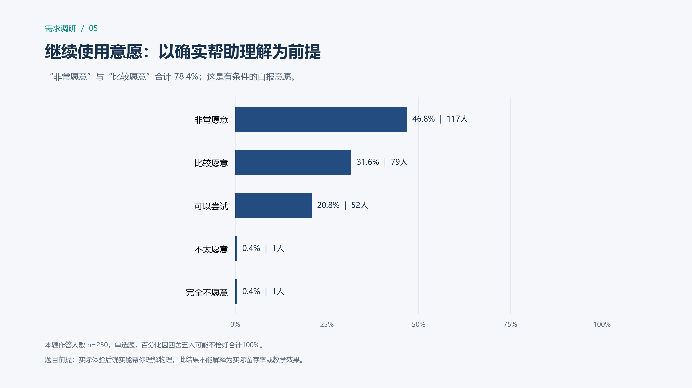
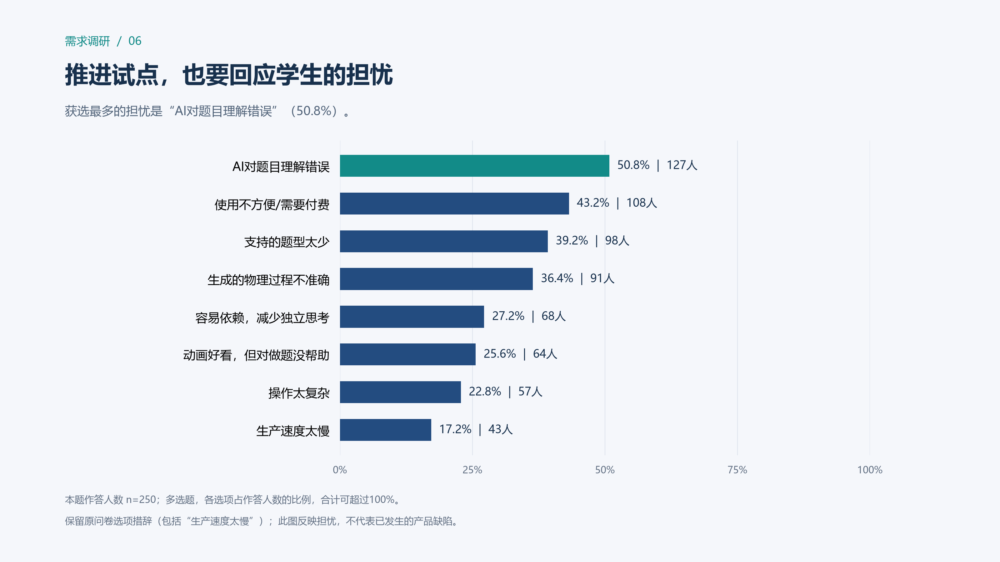

物理动态演示工具：需求调研
样本数 250 · 高二 178 人 / 高三 72 人 · 6 张评审展示图
解读口径：全部记录保留，描述样本内意见。多选比例以本题非空作答人数为分母；自填内容未强行并入预设选项。未取得抽样方式、学校分布与真实使用效果信息，因此不推断全体学生需求或教学效果。图表顺序建议：痛点 → 题型 → 功能 → 学习方式 → 条件性意愿 → 风险与试点。
学习痛点：多物体与多阶段过程
“多个物体相互作用时容易混乱”获选 80.4%，是预设痛点中最高的一项。

高清 PNG · 矢量 SVG
动态演示应优先覆盖哪些题型？
样本内获选最多：碰撞与动量问题（58.8%）。

高清 PNG · 矢量 SVG
功能优先级：学生最期待什么
“显示受力、速度或运动轨迹”获选最多（65.2%）。

高清 PNG · 矢量 SVG
产品应支持学生先思考、再验证
63.6% 选择先自己思考，再用动态演示验证。

高清 PNG · 矢量 SVG
继续使用意愿：以确实帮助理解为前提
“非常愿意”与“比较愿意”合计 78.4%；这是有条件的自报意愿。

高清 PNG · 矢量 SVG
推进试点，也要回应学生的担忧
获选最多的担忧是“AI对题目理解错误”（50.8%）。

高清 PNG · 矢量 SVG
评审讲述与下一步验证
这些回答为“复杂物理过程的可视化辅助”提供需求依据。建议从高需求题型做试点，支持暂停、观察和自主验证，并检验生成准确性、理解表现与独立解题表现。问卷中的预期不能替代实际效果验证。
开放题未自动编码成主题占比；不把“无”视为整份问卷无效。完整统计、原始回答对应的清洗表、未匹配内容和审计信息均保存在本目录。